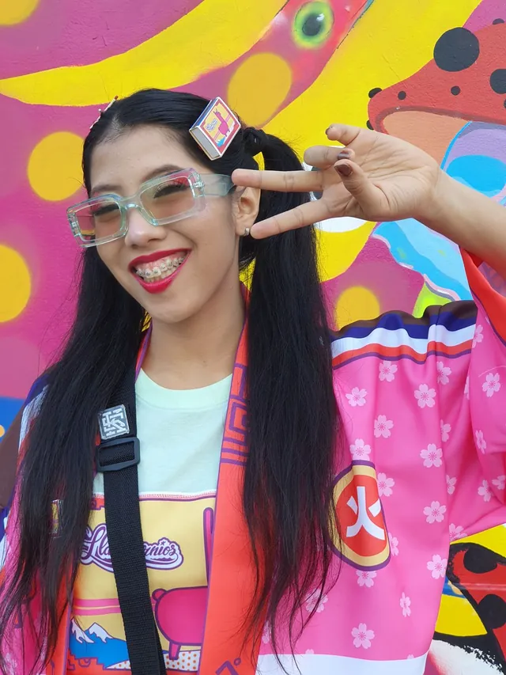

Del dibujo al objeto
Todo empieza con un personaje: una llama con cuerno. Se define su gramática —ojos, hocico, cuerno, patas— y desde ahí se deriva el resto: estampados, carteras, fósforos, juguetes, ropa.
La regla es simple: si el personaje no se reconoce a 1 cm, no funciona. Por eso el sistema se prueba en escala pequeña antes de saltar a producto.